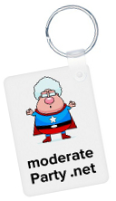

|
|
|||||
 With the powers of the Left and Right combined,
We Form Into Megazord !!!!
moderate Party .net
"To form a more perfect union, why not"
|
Q: what? huh? A: Whatsa whatsa moderate party.... Starting from a question mark, that's all. It's not centrism; we take sides. We just don't start from knowing who's right, let us think about it, SHEESH. We don't want to start an actual political party (sounds like a bad hassle). We'd rather it just be a thinker and something to talk about. Q: Why do you just repost memes? Why aren't there like candidates and arguing? A: No offense, but this whole manner of doing politics is too square. No funk. It's the wrong speed entirely to us to quarrel instead of create with our time. Let's turn swords to ploughshares, figure out how to like each other and stay different. It can't be a war and be cool, you know?  | ||||
|
Gonna have a Rock-a-Zoola 'til the end of time! Oh, yeah! * * Bop, Doo-Waa! * * * * Bop-a Bop-a, Doo-Waa! * * |
|||||
The Rest:
• various issues IN ONE MINUTE EACH !! •
•The F.A.Q. • • "...it's not THAT complicated..." • • "Failing a LOT on Purpose" • • "Black Bart" Thinking • • "Matched Set" • • The "Real vs. Fake Party?" Page • |
|||||


This is "Not-Weak Moderate"

[The Neutral Planet President, from Futurama]

SUDDEN QUESTION! ANSWER NOW!!
